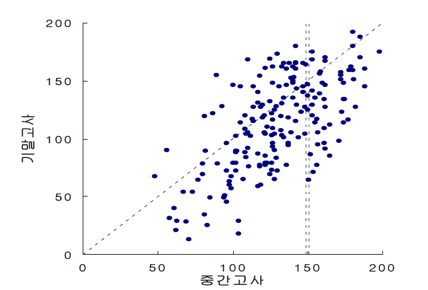
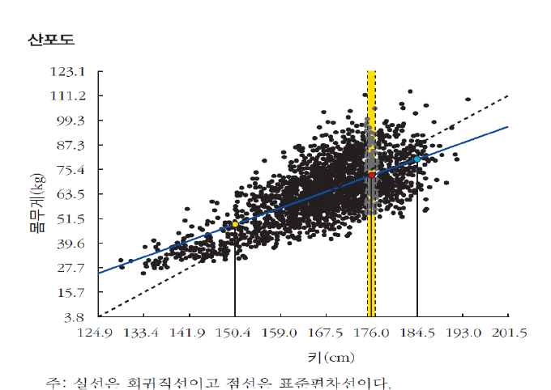
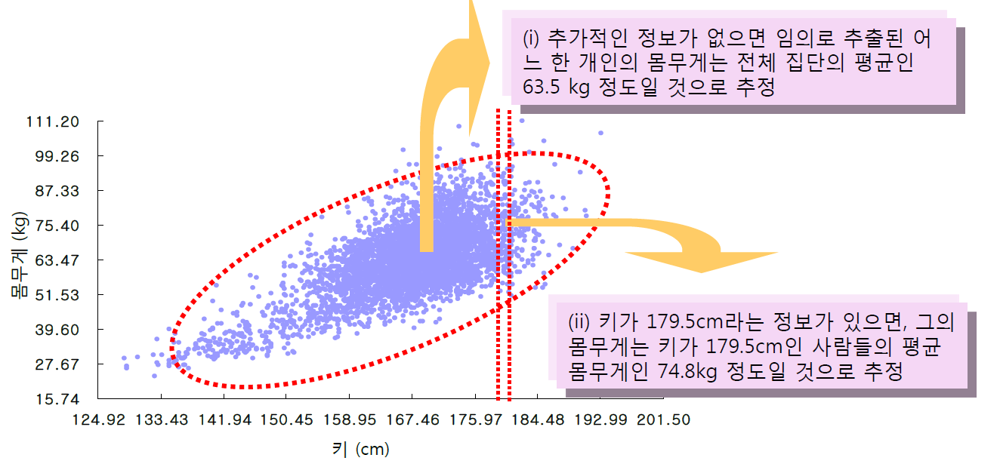
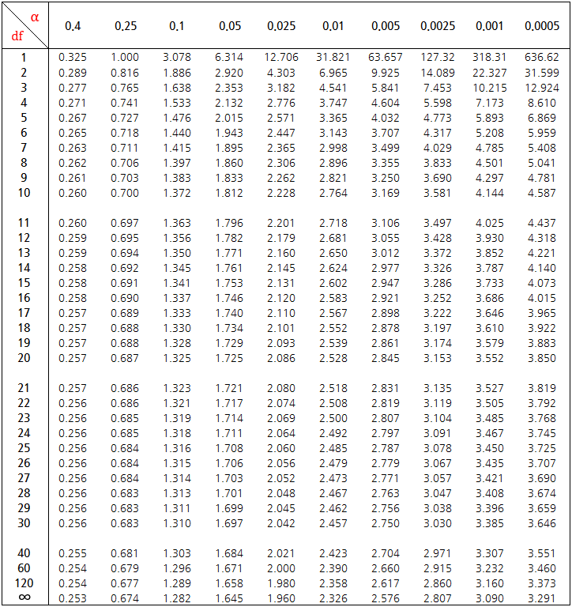

평균
(mean)
(mean)
자료의 총합을 자료의 개수로 나눈 것
→ 히스토그램의 무게 중심*
* 모든 자료와 자신과의 차이인 편차의 합을 0으로 만드는 지점
자료를 정리, 분석, 추론하여 유용한 정보를 이끌어냄으로써 효과적ㆍ효율적인 의사결정 지원
숫자는 스스로 말하지 않는다.
다양한 도시현상을 데이터를 통해 분석하기 위한
기초적인 통계이론의 개념과 그 원리를 이해하는 것
수식에 매몰되거나 통계 프로그램(SPSS, STATA, R 등)의 활용만을 강조하기 보다
통계이론의 원리 이해에 초점
기술통계학
추론통계학
주어진 자료를 변수별로 요약하여 자료의 특성을 추출하는 것
정리된 자료에 대한 의미를 해석하여 미지의 세계에 대해 추론
자료의 요약: 하나의 변수
히스토그램 · 평균과 중앙값 · 표준편차 · 정규분포로의 근사
어떻게 복잡한 자료를 쉽게 이해할 수 있을까?
X ~ N(170, 5^2) / 500개 랜덤추출
자료를 일정한 계급/구간으로 나누어 해당 구간에 속하는 자료의 빈도를 나타낸 분포표
도수분포표를 그래프로 나타낸 것
도수분포표
| 계급 | (절대)빈도 | 상대빈도 | 밀도 |
|---|
히스토그램(절대빈도)
히스토그램(밀도)
자료를 일정한 계급/구간으로 나누어 해당 구간에 속하는 자료의 빈도를 나타낸 분포표
도수분포표를 그래프로 나타낸 것
장점: 자료의 분포와 그 이면의 특징(중심점, 중심점으로부터의 퍼진 정도 등)에 대한 파악 가능
단점: 자료의 세부적인 수치에 대한 정보 상실 (계급으로 묶기 때문)
자료 내에서 최대값과 최소값을 찾는다.
최대값과 최소값이 포함되도록 자르기 좋은 대강의 범위를 만들고 그 범위 내에서 작은 범위, 즉 계급을 만든다.
(계급 수 산정식: $k = 1 + 3.3\,log_{10}N$, $k = 5 \times log_{10}N$)
각 계급 내에 속한 자료의 총 개수를 센다. 이 개수가 바로 도수 혹은 빈도(frequency)이다.
각 계급의 도수가 전체에서 차지하는 비율을 계산한다.
이 비율이 바로 상대도수 혹은 상대빈도(relative frequency)이며, 상대도수는 전체에서 차지하는 비율이므로 그 합은 반드시 1이다.
그래프의 x축에 계급을 순서대로 나열하고, 각 계급별로 상대도수의 크기를 고려하여 블록높이를 결정한다.
계급구간별 면적(=계급의 폭ⅹ높이)은 상대도수의 크기와 같아야 하며, 이 때 각 계급구간별 높이가 바로 밀도(density)이다.
* 밀도(density): 일정한 단위 당 자료의 비율 (물리학: 밀도(density) = 질량(mass) / 부피)
자료의 총합을 자료의 개수로 나눈 것
→ 히스토그램의 무게 중심*
* 모든 자료와 자신과의 차이인 편차의 합을 0으로 만드는 지점
전체 자료의 50%에 위치한 값
→ 히스토그램의 면적을 양분하는 값
자료 내에서 빈도가 가장 큰 값
→ 히스토그램의 최대 높이를 갖는 값
대칭(symmetric)
오른쪽으로 늘어짐
(right-skewed / positive-skewed)
왼쪽으로 늘어짐
(left-skewed / negative-skewed)
평균은 극단적인 값의 영향을 받지만, 중앙값은 극단적인 값의 영향을 받지 않음
관측치들이 평균으로부터 얼마나 떨어져 있는지를 나타내는 정도
| 포트폴리오 | 수익률 |
|---|---|
| 주식수익률 A | 0, 1, −3, 3, −1 |
| 주식수익률 B | 0, 5, −7, 7, −5 |
A, B의 평균수익률은 모두 0
→ 두 포트폴리오는 같은 특성을 지니고 있다고 볼 수 있는가?
자료를 대표하는 특성으로 평균은 부족하다!
관측치들이 평균으로부터 얼마나 떨어져 있는지를 나타내는 정도
분포를 파악하는 방법
$s = \sqrt{\dfrac{\sum (X_i - \bar{X})^2}{n-1}}$
평균으로부터의 편차(= 개별 관측치 − 자료의 평균)를 모두 합해보자
→ 평균으로부터의 편차의 합은 모든 자료에서 언제나 0이라 분포차이를 구할 수 없음
평균으로부터의 편차를 제곱하여 합해보자
→ 편차 제곱의 합은 자료의 개수에 영향 (자료가 많아질수록 제곱합의 크기도 증가)
평균으로부터의 편차 제곱합을 자료의 개수로 나눠보자
→ 자료가 하나인 경우에는? → 자유도(degree of freedom)의 문제
* 자유도: 자료 내에서 실질적으로 독립인 값의 개수
자료를 잘 요약하면 복잡한 정보를 쉽게 파악할 수 있다.
자료를 잘 요약하면 자료의 대표값과
대표값을 중심으로 퍼진 정도를 알 수 있고,
이를 통해 자료를 이미 알려진 분포에
근사함으로써 예측도 할 수 있다.
만약 어떤 확률변수가 정규분포와 유사한 형태의 분포를 지니고 있다면
그 분포를 정규분포로 간주하고,
표준화를 통해 어떤 구간 내에 속한 숫자의 비율을 구할 수 있다.
“평균 50, 표준편차 5”인 분포
→ 40~60 사이에 속한 자료는 대략 몇 %일까?
정규분포: 다음 특징을 지니면서 아래의 식을 따르는 분포
$X \sim N(\mu,\ \sigma^{2})$
$f(X)=\dfrac{1}{\sqrt{2\pi}\sigma}\,e^{-\frac{1}{2}\left(\frac{X-\mu}{\sigma}\right)^{2}}$
$(-\infty < x < +\infty)$
만약 어떤 확률변수가 정규분포와 유사한 형태의 분포를 지니고 있다면
그 분포를 정규분포로 간주하고,
표준화를 통해 어떤 구간 내에 속한 숫자의 비율을 구할 수 있다.
$X \sim N(50,\ 5^{2})$ $f(X)=\dfrac{1}{\sqrt{2\pi}*5}\,e^{-\frac{1}{2}\left(\frac{X-50}{5}\right)^{2}}$
40 = 평균 50 − 2표준편차
60 = 평균 50 + 2표준편차
자료가 정규분포와 유사할 경우
만약 어떤 확률변수가 정규분포와 유사한 형태의 분포를 지니고 있다면
그 분포를 정규분포로 간주하고,
표준화를 통해 어떤 구간 내에 속한 숫자의 비율을 구할 수 있다.
$X \sim N(50,\ 5^{2})$ $f(X)=\dfrac{1}{\sqrt{2\pi}*5}\,e^{-\frac{1}{2}\left(\frac{X-50}{5}\right)^{2}}$
정규분포곡선 아래 구간의 면적(= 그 구간 내에 속한 자료의 비율 = 그 구간의 값이 나올 확률)을 구하는 법
자료의 요약: 두 개의 변수
결합분포와 산포도 · 공분산과 상관계수 · 회귀분석
결합분포(joint distribution): 하나의 변수에 대한 분포가 아니라 두 변수 사이의 상호관계를 고려한 분포
→ 산포도(scatter plot): 두 변수의 결합분포를 나타내기 위해 한 변수를 x축에, 다른 변수를 y축에 표시하여 점으로 나타낸 것

산포도에서 우리가 알 수 있는 값
→ x와 y는 평균과 표준편차를 통해 각각 요약 가능
→ 이것만으로 충분할까?
(a), (b) 모두 x, y의 평균과 표준편차는 동일, 하지만 x, y의 결합분포 특성은 다름
→ (a)와 (b)의 차이를 반영할 수 있도록 x와 y의 결합분포는 어떻게 요약할까?
두 변수의 선형관계를 나타내는 통계량
ax+by=c
표본 공분산의 자유도는 n−1
(∵ $\bar{x}$, $\bar{y}$가 주어져 있을 때 $\bar{y}$를 알더라도 $\bar{x}$를 구하기 위해서는
n−1개의 표본이 필요하므로)
→ 공분산이 (+)이면 양의 관계, (−)이면 음의 관계
→ 해결방법: 공분산을 두 변수의 표준편차로 나누어 표준단위로 변환하자!
두 변수 간 선형관계의 방향과 강도를 측정단위와 무관하게 −1 ~ +1의 값으로 나타내는 통계량
$$r = \frac{\sum(x_i - \bar{x})(y_i - \bar{y})\,/\,(n-1)} {\sqrt{\sum(x_i - \bar{x})^2 / (n-1)} \cdot \sqrt{\sum(y_i - \bar{y})^2 / (n-1)}} = \frac{Cov_{xy}}{SD_x \cdot SD_y}$$
(1 또는 −1: 완전한 양의 상관 또는 음의 상관)
→ 모든 점들이 하나의 선 위에 위치
두 변수의 결합분포가 하나의 선 주위로 밀집된 정도
주: 각각의 산포도는 가로, 세로 모두 평균 3, 표준편차 1의 동일한 값을 갖는다. 각각의 산포도에는 50개씩의 점이 찍혀 있다.

→ 다른 정보가 없을 때 임의로 한 개인을 선택할 경우 몸무게는 얼마일 것으로 추정할 수 있는가?
: 다른 정보가 없으므로 전체 평균인 63.5kg 수준일 것
→ 만약 한 개인의 키가 179.5cm라는 정보가 있다면 그 값은 어떻게 바뀔까?
x변수에 대응하는 y변수의 “부분집합별” 평균값을 추정하는 통계적 방법

→ 모든 x에 대해서 부분집합을 구하고 y의 평균을 내기 어려움
→ 만약 한 개인의 키가 176cm라는 정보가 있을 경우
→ 상관계수를 통해 키를 고려한 몸무게의 수준을 더 정확히 추정할 수 있지 않을까?
$$r = \frac{\dfrac{\sum(x_i - \bar{x})(y_i - \bar{y})}{n-1}} {\sqrt{\dfrac{\sum(x_i - \bar{x})^2}{n-1}} \cdot \sqrt{\dfrac{\sum(y_i - \bar{y})^2}{n-1}}}$$
$$= \frac{\sum(x_i - \bar{x})(y_i - \bar{y})} {\sqrt{\sum(x_i - \bar{x})^2} \cdot \sqrt{\sum(y_i - \bar{y})^2}} \;=\; \frac{Cov_{xy}}{SD_x \cdot SD_y}$$
X가 평균에서 벗어난 정도(편차)의 표준편차 단위 환산 = X가 1표준편차 단위 변화할 때
Y가 평균에서 벗어난 정도(편차)의 표준편차 단위 환산 = Y는 표준편차 단위로 얼마나 변화할까?
→ 그 변화에 대한 평균값 (그 반대도 성립)
→ 키가 8.5cm 증가할 경우 몸무게는 얼마나 증가할까?
: 키가 1표준편차(1*8.5cm) 클 경우
몸무게는 평균적으로 0.67표준편차(0.67*11.9kg) 클 것
x변수에 대응하는 y변수의 평균값을 추정하는 통계적 방법
분포를 하나의 직선으로 근사
회귀직선의 기울기
$= r * \dfrac{SD_y}{SD_x}$
→ 상관계수를 y의 단위로 변환하는 것
→ y= a+(r*SDy/SDx)*X
x변수에 대응하는 y변수의 평균값을 추정하는 회귀직선을 나타내는 방정식
$Y = \beta_0 + \beta_1 X$
x 표준편차 단위 변화에 따른 y의 평균 변화량
x값의 표준편차 단위로의 변환
종속변수(dependent variable, Y)
추정되는 변수 (궁극적으로 알고자 하는 변수)
설명변수(독립변수)(independent variable, X)
종속변수를 추정하기 위해 활용하는 변수
추정오차(estimation error) = 잔차(residual) = 실제값 − 추정치
표준오차(standard error): 잔차 제곱의 평균에 제곱근을 취한 것 (Root Mean Squared Error, RMSE)
→ 표준오차가 작을수록 회귀직선이 자료를 잘 요약
$$SE = \sqrt{\dfrac{\sum(y_i - \hat{y}_i)^2}{n-2}}$$
자유도가 2만큼 줄어드는 이유
: 추정치 계산 시 회귀직선의 기울기와 절편을 통계량으로 사용하므로
회귀직선의 기울기와 절편을 추정하기 위한 방법으로서
산포도 상의 점들을 지나는 수많은 직선 중 RMSE로 측정된 표준오차(잔차제곱합의 평균 제곱근)를 최소화하는 직선을 찾는 것
$e_i = Y_i - b_0 - b_1 X_i$
⟶ 이 값을 최소화하는 모수 추정량 $b_0$, $b_1$ = 최소제곱추정량
$$SE = \sqrt{\dfrac{\sum(y_i - \hat{y}_i)^2}{n-2}}$$
표준오차의 최소화 = 잔차제곱합의 최소화
회귀직선의 기울기와 절편을 추정하기 위한 방법으로서
산포도 상의 점들을 지나는 수많은 직선 중 RMSE로 측정된 표준오차(잔차제곱합의 평균 제곱근)를 최소화하는 직선을 찾는 것
$e_i = Y_i - b_0 - b_1 X_i$
⟶ 이 값을 최소화하는 모수 추정량 $b_0$, $b_1$ = 최소제곱추정량
$$\frac{\partial \sum e_i^{\,2}}{\partial b_0} = \sum -2(Y_i - b_0 - b_1 X_i) = 0$$
$$\frac{\partial \sum e_i^{\,2}}{\partial b_1} = \sum -2(Y_i - b_0 - b_1 X_i)X_i = 0$$
$$b_1 = \frac{\sum (X_i - \bar{X})(Y_i - \bar{Y})} {\sum (X_i - \bar{X})^2}$$
$$b_0 = \bar{Y} - b_1 \bar{X}$$
“회귀직선이 y의 변화를 설명하는 정도”로서 전체 편차 중에 회귀선이 설명하는 비율을 의미
$R^2 = \dfrac{SSR}{SST} = 1 - \dfrac{SSE}{SST}\quad (0 \le R^2 \le 1)$ 1에 가까울수록 높은 설명력 (단순회귀에서는 상관계수의 제곱)
$y_i - \bar{y} = [(a + b x_i) - \bar{y}] + [y_i - (a + b x_i)]$
$T \quad = \quad R \quad + \quad E$
$\sum (y_i - \bar{y})^2 = \sum [(a + b x_i) - \bar{y}]^2 + \sum [y_i - (a + b x_i)]^2$
$SST \quad = \quad SSR \quad + \quad SSE$
“회귀직선이 y의 변화를 설명하는 정도”로서 전체 편차 중에 회귀선이 설명하는 비율을 의미
$R^2 = \dfrac{SSR}{SST} = 1 - \dfrac{SSE}{SST}$
$(0 \le R^2 \le 1)$
1에 가까울수록 높은 설명력 (단순회귀에서는 상관계수의 제곱)
→ 설명변수가 추가되면 SSE는 무조건 감소
→ 결정계수는 계속 증가 (많은 설명변수를 가진 모형이 무조건 유리?!)
$\text{adj } R^2 = 1 - \dfrac{SSE/(n-k-1)}{SST/(n-1)}$
n = 표본크기
k = 설명변수의 개수
설명변수가 추가될수록 자유도가 감소하도록 조정
→ 설명변수 추가에 따른 SSE의 감소속도 < 설명변수 추가에 따른 자유도 감소속도
→ 표준오차가 증가 → 결정계수는 오히려 감소
$cf)\ SE = \sqrt{\dfrac{\sum (y_i - \hat{y}_i)^2}{n-2}}$
→ 설명변수 추가에 따라 SSE가 충분히 많이 감소해야
(즉, 설명변수가 잔차를 크게 줄여야)
회귀직선의 설명력인 결정계수가 증가
예. 아이스크림 판매량이 증가하면 일사병이 많이 걸린다.
→ 이론적 토대 + 설명 가능여부의 중요성
자료 요약을 넘어 추론으로: 확률이론
표본공간과 사건 · 확률변수와 확률분포 · 덧셈법칙과 곱셈법칙 · 베이즈 정리
어떤 사건이 일어날 가능성
그 사건에 대한 주관적 확신의 정도
한 시행을 동일한 조건에서 독립적으로 반복했을 때,
전체 시행횟수에서 그 사건이 일어난 횟수의 비율(상대도수)
특정한 실험 혹은 시행에서 관찰 가능한 결과, 표본공간의 부분 집합
특정한 실험 혹은 시행에서 관찰 가능한 모든 사건의 집합
사건 A의 확률은 표본공간에서 사건 A가 나타나는 경우가 모든 사건의 경우의 수에서 차지하는 비중
표본공간에서 정의되는 각 사건들에 대응하는 실수 값 → 우리가 관심을 갖는 형태로 구성
확률변수가 출현할 가능성, 즉 사건이 발생할 가능성에 대한 분포
한 사건이 발생할 때 다른 사건이 일어날 수 없는 경우 두 사건 간의 관계
Q) 사건 A의 상호배반 사건은? A의 여사건
$$P(A \cup B) = P(A) + P(B) - P(A \cap B)$$
→ 주변확률/비조건부확률 (marginal probability)
→ 결합확률 (joint probability)
P(A|B) = B가 일어났다는 것을 알고 있을 때 A가 일어날 확률
$$P(A|B) = \frac{P(A \cap B)}{P(B)}$$
$$P(A \cap B) = P(A) \times P(B|A) = P(B) \times P(A|B)$$
→ 주변확률/비조건부확률 (marginal probability)
→ 결합확률 (joint probability)
→ 조건부확률 (conditional probability)
→ 복원추출은 매 추출이 독립, 비복원추출은 종속
두 사건이 독립일 경우
$P(B|A) = P(B),\ P(A|B) = P(A)$
따라서 두 사건이 모두 일어날 확률은
$P(A \cap B) = P(A) \times P(B|A) = P(A) \times P(B)$
만약 두 사건이 종속이라면
두 사건의 결합확률을 계산하기 위해서
반드시 두 사건의 조건부확률을 알아야 한다!
$$P(A \cup B) = P(A) + P(B) - P(A \cap B)$$
→ 두 사건이 상호배반일 경우 $P(A \cap B) = 0$
$$P(A \cap B) = P(A) \times P(B|A)$$
→ 두 사건이 독립일 경우 $P(B|A) = P(B)$
P(A|B) = B가 일어났다는 것을 알고 있을 때 A가 일어날 확률
$$P(A|B) = \frac{P(A \cap B)}{P(B)} = \frac{P(A \cap B)}{P(A \cap B) + P(A^c \cap B)}$$
B가 일어났다는 것을 알고 있을 때 A가 일어날 확률
$$P(A|B) = \frac{P(A \cap B)}{P(B)} = \frac{P(A \cap B)}{P(A \cap B) + P(A^c \cap B)}$$
$$= \frac{P(A)P(B|A)}{P(A)P(B|A) + P(A^c)P(B|A^c)}$$
확률의 곱셈법칙
B가 발생했다는 정보가 있을 때 A가 발생할 확률
(B의 발생이 A가 발생한 상황에서 나타난 것인지
혹은 B의 발생이 A가 발생하지 않은 상황에서 나타난 것인지)
(B의 발생이 A가 발생한 상황에서 나타난 경우)
사전에 설정한 (주관적 견해의) 확률을 새롭게 주어진 정보를 활용해서 업데이트 시켜 미지의 세계를 추론하는 것
$$P(A|B) = \frac{P(A)P(B|A)}{P(A)P(B|A) + P(A^c)P(B|A^c)}$$
Q) 사지선다로 낸 회귀분석 문제를 맞췄을 때(B) 알고 풀었을(A) 확률은?
→ 사후확률 (posterior probability)
$P(A) = 1/2$
$P(B|A) = 1$
$P(A^c) = 1 - P(A) = 1/2$
$P(B|A^c) = 1/4$ (∵ 사지선다)
$P(A|B) = \dfrac{P(A)P(B|A)}{P(A)P(B|A) + P(A^c)P(B|A^c)} = \dfrac{0.5 * 1}{0.5 * 1 + 0.5 * 0.25} = 0.75$
확률변수와 확률분포
기대값과 분산 · 확률변수의 조합 · 대수의 법칙 · 중심극한정리
표본공간에서 정의되는 각 사건들에 대응하는 실수 값
→ 우리가 관심을 갖는 형태로 구성
확률변수가 출현할 가능성, 즉 사건이 발생할 가능성에 대한 분포
→ 이산확률분포, 연속확률분포
우리가 관심을 갖는 사건을 숫자로 표현한 것
기대값
특정한 확률분포를 따르는 확률변수가 가질 것으로 기대되는 값
→ $E(X) = \mu$
분산
확률변수와 기대값 간의 차이, 즉 편차의 제곱합이 가질 것으로 기대되는 값
→ $VAR(X) = E[(X - \mu)^2]$
표준오차
실현된 값이 기대값과 차이가 나는 정도의 표준적인 크기 = 기대값으로 나타낸 표준편차 = $\sqrt{\text{분산}}$
Q) 5가 한 장, 1이 세 장 들어있는 상자에서 하나의 카드를 추출할 때 기대값, 분산, 표준오차는?
X, Y : 확률변수, c : 상수, g( ), h( ): 함수
$E(c) = c$
$E[c\,g(X,Y)] = c\,E[g(X,Y)]$
$E[g(X,Y) + h(X,Y)] = E[g(X,Y)] + E[h(X,Y)]$
$E[g_x(X) \cdot h_y(Y)] = E[g_x(X)] \cdot E[h_y(Y)]$
(X, Y가 서로 독립일 때)
$E(X+Y) = E(X) + E(Y)$
$E(aX+b) = a\,E(X) + b$
$E(XY) = E(X) \cdot E(Y)$
(X, Y가 서로 독립일 때)
$Var(X) = E[(X - E(X))^2] = E[X^2 - 2X E(X) + E(X)^2]$
$\qquad = E(X^2) - 2E(X)E(X) + E(X)^2 = E(X^2) - E(X)^2$
$Var(X+Y) = Var(X) + Var(Y) + 2\,Cov(X,Y)$
만약 X, Y가 독립이라면
$Var(X+Y) = Var(X) + Var(Y)$
$Var(aX+b) = a^2 Var(X)$
특정 확률변수를 더하거나 곱하는 등 조합하면 새로운 확률변수와 새로운 확률분포를 만들 수 있다.
어떤 시행에 따른 사건의 결과가 p의 확률로 성공과 실패, 즉 1과 0의 확률변수가 따르는 확률분포
n번 시행한 베르누이 확률변수의 결과를 모두 합하여 새롭게 만든 확률변수가 따르는 분포
베르누이 확률변수를 합한 이항 확률변수에서 시행횟수(n)을 크게 늘렸을 때 그 값이 따르는 분포
n개의 표준정규확률변수를 제곱한 결과를 모두 합하여 새롭게 만든 확률변수가 따르는 분포
제곱근 법칙 (square root law) = 대수의 법칙(평균의 법칙)
특정 확률분포를 따르는 확률변수(X)를 합하여 만든 새로운 확률변수(Y=X1+X2+…+Xn)의 표준편차는
처음 확률변수가 갖는 표준편차(SD(X))와 확률변수를 합한 횟수(n)의 제곱근 간의 곱으로 표현
(확률변수 X의 표준편차) $\times \sqrt{\text{합한 회수}}$
$Var(Y) = Var(X_1 + X_2 + X_3 \cdots + X_n) = Var(X_1) + Var(X_2) + \cdots + Var(X_n) = n\,Var(X)$
(∵ X는 독립이므로)
→ 합한 횟수가 1이면 합의 표준편차 = 처음 확률변수의 표준편차
만약 확률변수 Y가 합이 아니라 평균이라면?
즉, Y= (X1+X2+…+Xn)/n
제곱근 법칙 (square root law) = 대수의 법칙(평균의 법칙)
특정 확률분포를 따르는 확률변수(X)의 합을 평균하여 만든 새로운 확률변수(Y=X1+X2+…+Xn/n)의 표준편차는
처음 확률변수가 갖는 표준편차(SD(X))를 확률변수를 합한 횟수(n)의 제곱근으로 나눈 값으로 표현
$\dfrac{\text{확률변수 X의 표준편차}}{\sqrt{\text{합한 회수}}}$
$Var(Y) = Var\!\left(\dfrac{X_1 + X_2 + \cdots + X_n}{n}\right) = \dfrac{1}{n^2}\left[Var(X_1) + Var(X_2) + \cdots + Var(X_n)\right]$
$= \dfrac{1}{n^2}\,n\,Var(X) = Var(X)/n$
(∵ X는 독립이므로)
→ 합한 횟수가 1이면 평균의 표준편차 = 처음 확률변수의 표준편차
어떤 확률분포를 따르는지에 상관없이
특정 확률변수를 여러 번 합하거나 혹은 평균한 값을 새로운 확률변수로 가질 경우
새로운 확률변수의 표준편차는
기존 확률변수가 지닌 표준편차의 n배만큼 증가하는 것이 아니라
$\sqrt{n}$에 비례하거나 반비례한다.
→ Why?
합하면 극단적인 값이 출현할 경우의 수는 매우 적지만, 중간 값이 출현할 경우의 수는 커지기 때문에
합할수록 값의 표준편차가 합한 횟수의 속도만큼 늘어나지 않음
어떤 확률분포를 따르는지에 상관없이
특정 확률변수를 충분히 많은 수까지 더하거나 이를 평균한 값을 새로운 확률변수로 만들면,
그 확률변수는 정규분포에 수렴하는 특성이 있다.
이를 중심극한정리(central limit theorem)라 한다.
단, 정규분포로 수렴해가는 속도는 초기 확률분포에 따라 다르다. (초기 확률분포가 정규분포와 닮을 경우 n이 작아도 성립)
모집단에서 추출한 표본으로 만들어진 표본통계량(예. 표본평균) 또한 그 값이 확정되지 않았으므로 확률변수이다.
• 표본통계량(확률변수)으로서 표본평균 $\bar{X}$ 의 기대값
$E(\bar{X}) = E\!\left(\dfrac{x_1 + x_2 + \cdots + x_n}{n}\right) = \dfrac{E(X) + E(X) + \cdots + E(X)}{n}$
$\qquad\; = \dfrac{n E(X)}{n} = E(X) = \mu$
→ 표본평균은 모평균에 대한 불편추정량(unbiased estimator)이다.
* 불편의성(unbiasedness)
추정량의 기대값이 추정하려는 모수와 정확하게 일치하는지의 여부
모집단에서 추출한 표본으로 만들어진 표본통계량(예. 표본평균) 또한 그 값이 확정되지 않았으므로 확률변수이다.
• 표본통계량(확률변수)으로서 표본평균 $\bar{X}$ 의 분산
$Var(\bar{X}) = Var\!\left(\dfrac{x_1 + x_2 + \cdots + x_n}{n}\right) = \dfrac{1}{n^2}\left[Var(x_1) + Var(x_2) + \cdots + Var(x_n)\right]$
$= \dfrac{1}{n^2}\,n\,Var(X) = Var(X)/n = \sigma^2/n$
→ 표본평균의 분산은 모집단의 분산에 비례하고 표본개수에 반비례한다.
(∵ 확률변수들의 평균을 새로운 확률변수로 할 경우 대수의 법칙이 성립)
→ 표본평균의 분산에 대한 제곱근 = 표본평균의 표준오차
→ 표본평균이 모평균에 비해 얼마나 떨어져 있을지를 나타냄
모집단에서 추출한 표본으로 만들어진 표본통계량(예. 표본평균) 또한 그 값이 확정되지 않았으므로 확률변수이다.
• 표본통계량(확률변수)으로서 표본평균의 분포
$\bar{X}$의 평균 $= \mu$
$\bar{X}$의 분산 $= \sigma^2/n$
만약 n이 충분히 크다면
X의 확률분포인 f(x)에 상관없이
$\bar{X}$는 정규분포에 근사
→ 중심극한정리
$\bar{X} \sim N(\mu,\ \sigma^2/n)$
통계적 추론: 추정과 가설검정
점추정과 구간추정 · 가설검정의 절차 · 제1종 오류와 제2종 오류
모집단에서 임의의 표본을 추출하여 이를 바탕으로 모집단의 특성을 찾아내는 통계적 과정
모집단에서 임의의 표본을 추출하여 이를 바탕으로 모집단의 특성을 찾아내는 통계적 과정
표본을 이용하여 만든 표본통계량을 모수추정량으로 삼아 모집단의 모수를 예측하는 방법
표본을 이용하여 만든 표본통계량을 모수추정량으로 삼아 모집단의 모수를 예측하는 방법
〈표본평균을 활용한 모평균의 구간추정 절차〉

표본통계량이 귀무가설 하의 분포에서 도출되었다고 가정한 상태에서
실제 통계치가 귀무가설 하에서 도출될 확률을 계산하여 귀무가설을 검증하는 것
버릴 것을 예상하는 가설, 차이는 우연이다.
우리가 증명하고자 하는 가설, 차이는 실질적이다.
귀무가설이 옳다는 가정 하에서 귀무가설의 기각여부를 결정하는데 사용할 기준 확률
유의수준 하에서 귀무가설을 기각하게 하는 임계 값 및 그 구간(기각역)
귀무가설이 옳다는 가정 하에서 계산된 검정 통계량이 도출될 확률
〈단일 표본의 평균 검정〉
귀무가설(H0): 평균은 $\mu$일 것이다.
대립가설(H1): 평균은 $\mu$가 아닐 것이다(양측) / 평균은 $\mu$보다 크거나(우측 기각역) $\mu$보다 작을 것(좌측 기각역)이다(단측)
〈두 표본의 평균 검정〉
귀무가설(H0): 두 집단의 평균에는 차이가 없을 것이다. ($\mu_1 = \mu_2 \rightarrow \mu_1 - \mu_2 = 0$)
대립가설(H1): 두 집단의 평균에는 유의미한 차이가 존재할 것이다(양측) ($\mu_1 \neq \mu_2 \rightarrow \mu_1 - \mu_2 \neq 0$)
Q) 회귀계수 $b_1$은 실질적인 의미가 있는가?
귀무가설: 회귀계수는 유의미하지 않다 ($b_1 = 0$)
대립가설: 회귀계수는 유의미하다 ($b_1 \neq 0$)
$b_1 = \dfrac{\sum (X_i - \bar{X})(Y_i - \bar{Y})}{\sum (X_i - \bar{X})^2}$
− 오차의 분산 $\sigma^2$을 알 때: $Var(b_1) = \dfrac{\sigma^2}{\sum (X_i - \bar{X})^2}$
− 오차의 분산 $\sigma^2$을 모를 때: $Var(b_1) = \dfrac{S^2}{\sum (X_i - \bar{X})^2}$
$S = \sqrt{\dfrac{\sum (y_i - \hat{y}_i)^2}{n-2}}$
$T(n-2) = (b_1 - 0)\,/\,SE(b_1)$
| 검정결과 | 실제상황 | |
|---|---|---|
| 귀무가설이 옳은 경우 | 귀무가설이 옳지 않는 경우 | |
| 귀무가설을 기각안함 | 옳은 결정 | 제2종 오류 |
| 귀무가설을 기각함 | 제1종 오류 | 옳은 결정 |
→ 제1종 오류의 확률 = 유의수준
→ 1−제2종 오류의 확률 = 검정력
→ 제1종 오류의 확률 = 유의수준
→ 1−제2종 오류의 확률 = 검정력
추정(estimation)이나 가설검정(hypothesis test)은
검정하기 위한 통계량의 분포를 명확히 추론하는데서 출발한다.
(분포형태(정규분포, t분포, 카이제곱분포 등), 기댓값, 표준오차)
검정통계량의 분포에서
내가 관측한 값이 희귀하면 귀무가설은 옳지 않고,
내가 관측한 값이 평범하면 귀무가설을 유지하는 것이 낫다.
기술통계학
추론통계학
통계학은 자료를 정리, 분석, 추론하여 유용한 정보를 얻기 위한 언어이자 도구
한 학기 동안 고생 많았습니다!
권규상 Kyusang Kwon
kyusang.kwon@chungbuk.ac.kr